Does the space feel open?空间是不是通透
Lighting determines whether the ceiling feels clean, the room feels open, and a small home feels larger.灯光决定顶面是否干净、空间是否开阔，以及小户型是否显大。
Mijia Ceiling Light Pro Ultra-thin L100 · Social Content Marketing Strategy米家吸顶灯 Pro 超薄 L100 · 社媒内容营销策略
On social media, the real competition in ceiling lights is not who is brighter, thinner, or smarter, but who enters the user's imagination of future living earlier.在社媒里，吸顶灯品类真正的竞争，不是谁更亮、更薄、更智能，而是谁更早进入用户对未来生活的想象。

Many people spend a lot of time choosing sofas, floors, cabinets, and curtains during renovation, but after moving in the home still feels less refined than expected. Often, the issue is not the furniture. It is the lighting.很多人装修时会花大量时间选沙发、地板、柜子、窗帘，但真正住进去之后，家还是没有想象中高级。很多时候，问题不在家具，而在光。
Lighting determines whether the ceiling feels clean, the room feels open, and a small home feels larger.灯光决定顶面是否干净、空间是否开阔，以及小户型是否显大。
Coming home, spending time together, reading, and resting all require the right light.下班、陪伴、阅读、休息，每个日常场景都需要合适的光线。
Renovation decisions are hard to undo, so users need sizing, color temperature, wattage, and pitfall guidance to reduce anxiety.装修不可逆，用户需要尺寸、色温、功率和避坑建议来消除焦虑。
Brighter, thinner, smarter, easier on the eyes, and more energy-saving.多亮、多薄、多智能、多护眼、多省电。
Let users see Mijia L100 while imagining an ideal home, projecting real life, and confirming a renovation plan.让用户在想象理想家、代入真实生活、确认装修方案时都看见米家 L100。

These are not three completely separate audiences, but three typical states within the renovation cycle. The same user may move from an ideal-home dreamer, to an atmosphere-life seeker, and finally to a practical renovator.三类人不是完全割裂的人群，而是用户在装修周期中的三个典型状态。同一个用户，也可能从理想造梦家，逐渐变成氛围生活家，最后进入装家实战师。
When users buy lighting, it is not a one-time decision. At different stages, they are buying an imagined home, an aspired lifestyle, and a certain solution.用户在买灯具的时候不是一次性决策，而是在不同阶段分别购买 想象的家/向往的生活/确定性的方案
This content system is not about repeating one type of content. Aesthetic living rooms, warm daily life, and practical smart renovation each take on the tasks of clicks and saves, emotional resonance, and rational conversion.本次内容体系不是做同一种内容，而是让美学客厅、温馨生活、硬装智能分别承担点击收藏、情绪共鸣、理性转化的任务。
Concrete content demo cases for the three scenarios. All images and copy in the demos are produced by our proprietary AI agent.三大内容场景内容demo的具体案例，demo中的图文均为自有ai agent产出
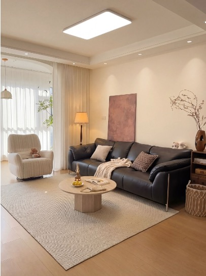
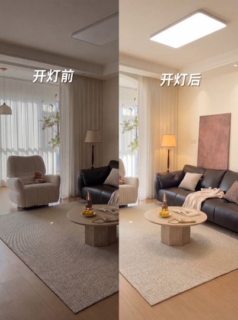
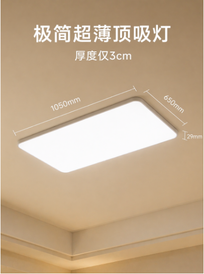
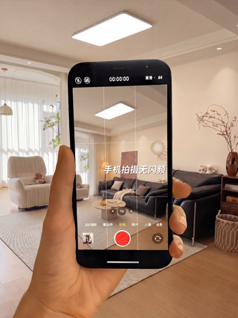
Goal: click-through rate / save rate目标：点击率 / 收藏率
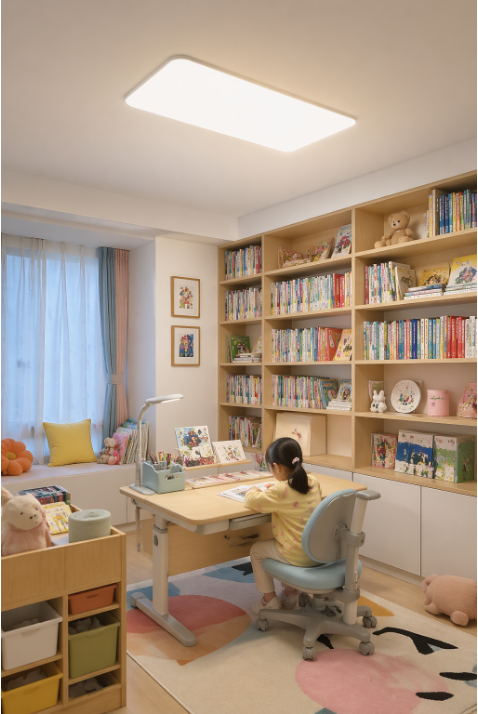
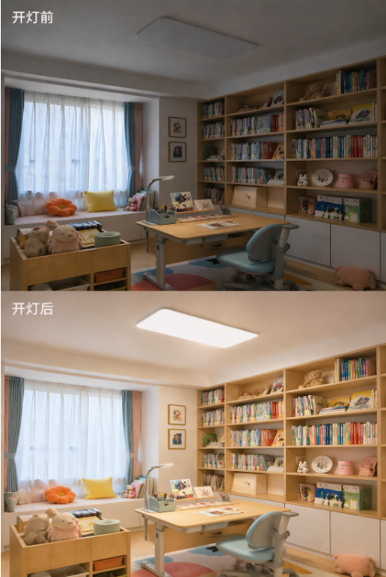
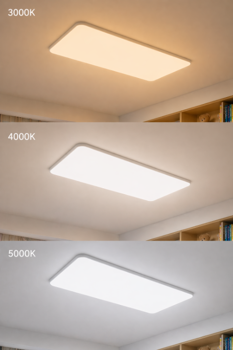
Goal: share rate / trust目标：分享率 / 信任感
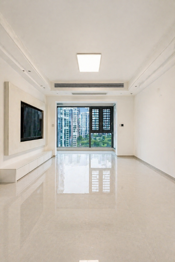
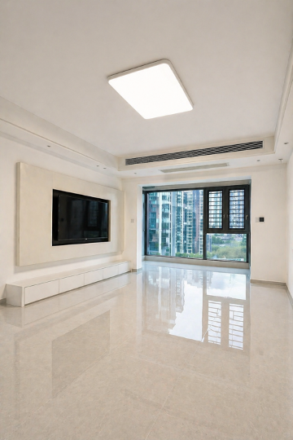
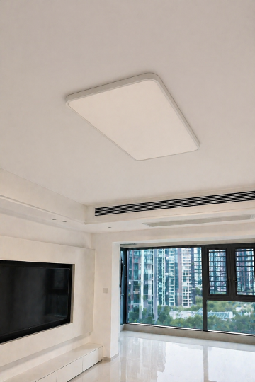
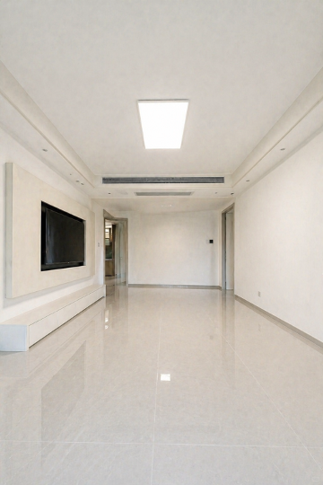
Goal: inquiries / add-to-cart目标：咨询 / 加购
Users imagine a lifestyle while making purchase decisions. Content is search, shelf, and decision support all at once.用户是一边想象生活，一边完成消费决策。内容即搜索，内容即货架，内容即决策辅助。
It can appear across style, emotional, practical, and search-driven content, staying visible at different decision stages.它可以同时进入风格内容、情绪内容、实用内容和搜索内容，在不同阶段持续被看见。
Cream style, minimalism, premium living rooms, and making small homes look larger.奶油风、极简风、高级感客厅、小户型显大。
After-work relaxation, families with kids, nighttime ambience, and healing living rooms.下班放松、有娃家庭、夜晚氛围、治愈客厅。
Pitfall avoidance, sizing, color temperature, wattage, installation, and smart control.避坑、尺寸、色温、功率、安装和智能控制。
The core principle for creator selection is matching audience, selling point, and scenario. It is not just about finding home creators, but judging whether the account can carry the content task for each stage.达人筛选的核心原则是“人群 - 卖点 - 场景”三重匹配。不是单纯找家居达人，而是判断账号能不能承担对应阶段的内容任务。
| Creator type达人类型 | Suggested mix建议配比 | Main task主要任务 | Key selection criteria重点筛选指标 |
|---|---|---|---|
| Breakout creators黑马型达人 | 10% | Leverage momentum for scale借势起量 | Recent viral-post rate, engagement growth trend, and cover clickability.近期爆文率、互动增长趋势、封面点击能力 |
| Persona-led creators人设型达人 | 30% | Main force for seeding and conversion种草转化主力 | Stable persona in home, interior design, or high-aesthetic lifestyle content.家居、室内设计、高审美生活方式人设稳定 |
| KOC | 40% | Strengthen word-of-mouth atmosphere夯实口碑氛围 | Strong real-life feel, low ad trace, and natural discussion in comments.真实生活感强、弱广告痕迹、评论区讨论自然 |
| Organic true fans素人真爱粉 | 20% | Long-term trust and referral growth长期信任裂变 | Authentic renovation records, willingness to share repeatedly, and long-term space tracking.真实装修进程记录、愿意多次分享、长期追踪空间 |
This content system is not a one-off campaign. It should keep iterating. The optimization logic is simple: identify what is missing, then create content to fill that gap.这套内容体系不是一次性投放，而是持续迭代。后续优化逻辑可以概括为：洞察“缺什么”，内容就“补什么”。
Track save rate, comment keywords, and completion rate. If users ask “how should I choose for my home,” add floor-plan comparison charts, FAQs, and wattage testing modules.看收藏率、评论关键词和完播率。如果用户问“我家怎么选”，就补户型对照表、FAQ 和功率测试组件。
Track share rate, negative-word frequency, and completion of night-light clips. If resonance is strong but conversion is weak, add eye-comfort tests and lighting plans for families with kids.看分享率、负面词频和夜灯片段完播。如果共情强但转化弱，就补护眼实测和有娃照明方案。
Track like-save ratio, profile visits, and style keywords. If the content looks good but lacks practicality, add style collections and real height-comparison shots.看赞藏比、主页访问量和风格关键词。如果好看但不够实用，就补风格合集和层高实拍对比。